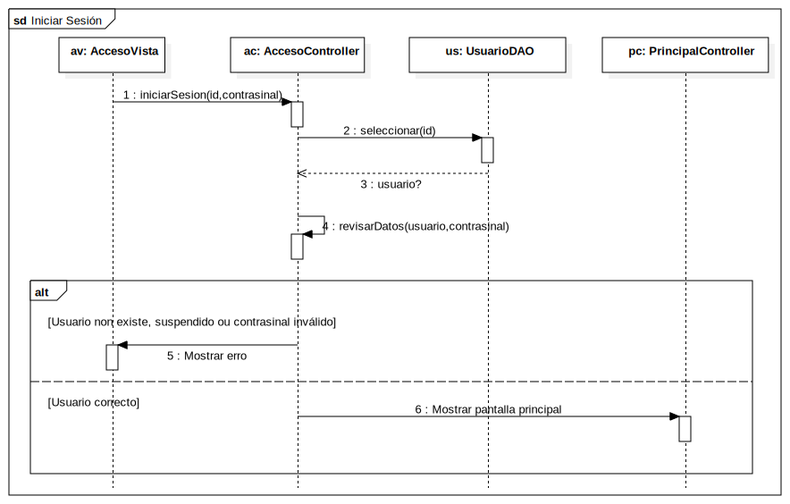

Interaction1
UMLInteraction
ESaude
::
Diagramas de Secuencia
::
Inicio de sesión
::
Interaction1
Description
none
Diagrams

Iniciar Sesión
Fragments
(CombinedFragment)
Participants
ac: AccesoControlador
us: UsuarioServicio
ur: UsuarioRepositorio
pc: PrincipalControlador
Messages
iniciarSesion (ac→us)
obterUsuario (us→ur)
usuario? (ur→us)
Mostrar erro (us→ac)
codificarJwt (us→us)
Mostrar pantalla inicio (us→pc)
Properties
Name
Value
name
Interaction1
stereotype
null
visibility
public
isReentrant
true
Owned Elements
Iniciar Sesión